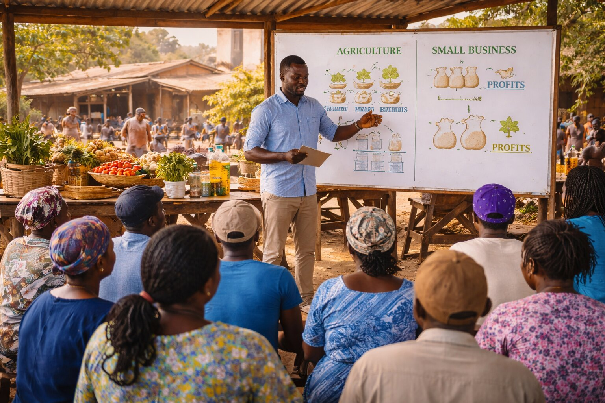

Africa Development Program Services (ADPS) is a development and impact services firm supporting institutional donors, private philanthropists, and corporations to ensure that development funding in Africa is professionally managed, transparently governed, and capable of delivering measurable, lasting impact.
We operate at the intersection of program design, delivery oversight, governance, and impact assurance, helping funders move from intention to credible results.
What We Do
We support development and sustainability initiatives across Africa through two core service pillars:
Program Management Services
From funding to field impact
Program Audit & Impact Assurance
Independent verification and accountability
Who We Serve
Institutional donors & foundations
Private philanthropists & family offices

Corporations & CSR programs
Why ADPS
Africa-focused development expertise
Strong financial governance and audit leadership
Field coordination and verification capacity
Climate and sustainability orientation
Independent, ethical, and professional standards
Work with ADPS to strengthen delivery, governance, and impact.
About ADPS
Africa Development Program Services (ADPS) was created to respond to one of the biggest challenges in development work across Africa: strong ideas and funding often fail to translate into strong delivery.
Many organizations have ambitious missions, donor support, and committed teams — but struggle with program structuring, implementation systems, monitoring, and coordination across partners and countries.
ADPS exists to bridge this gap.
Founded by international development and sustainability programs professionals with experience supporting complex, multi-stakeholder initiatives, ADPS supports institutional donors, governments, private philanthropists, corporations, and social enterprises to design, manage, strengthen, and scale development programs that deliver measurable impact.
Mission & Vision
To strengthen development outcomes in Africa by ensuring that programs are well-designed, well-managed, and independently verified.
An Africa where development funding translates into effective delivery, accountable governance, and sustainable impact.
Our Approach
ADPS operates as a delivery partner, technical support unit, and program management office, helping organizations move from concepts to results.
ADPS combines:
Program management excellence
Financial governance and risk oversight
Field-based implementation verification
Monitoring, evaluation, and impact assurance
We do not replace implementers — we strengthen delivery, accountability, and impact.
Our Services
Program Management Services
From funding to field impact, ADPS acts as a program management and delivery partner for funders seeking professionally structured development and sustainability programs in Africa. We bridge the gap between funding, strategy, and implementation, ensuring programs are well-designed, well-managed, and results-driven.
Program & Portfolio Design
Program structuring and technical design
Workplans, budgets, KPIs, and governance frameworks
Partner identification and due diligence
Program Management & Delivery Oversight
Program Management Office (PMO) support
Implementation coordination
Partner management and performance tracking
Risk and compliance oversight
Monitoring, Evaluation & Impact Management
Results frameworks and dashboards
Field monitoring and verification
Progress and financial reporting
Outcome and impact assessments
Climate, Sustainability & Development Programs
Climate and resilience initiatives
Green economy and livelihoods
Community and social development programs
Professional program delivery systems
Reduced implementation and reputational risk
Transparent management of funds
Strong partner coordination
Credible evidence of results
Long-term sustainability focus
Program Audit & Impact Assurance
Independent verification and accountability. ADPS provides independent program audit and impact assurance services for donors who have disbursed funds directly to beneficiaries, NGOs, or partners and require objective verification.
Impact assurance refers to ADPS’s independent services that provide funders with confidence that:
resources were used as intended
programs were implemented as agreed
beneficiaries were genuinely reached
reported results are credible and meaningful
Financial utilisation & governance review
Program delivery assessment
Field verification & beneficiary validation
Results, impact & sustainability analysis
What We Audit
Use of funds and financial governance
Program delivery and partner performance
Field implementation and beneficiary reach
Outputs, outcomes, and sustainability risks
Operational, financial, and reputational risks
Seeking independent verification of funded initiatives
Independent, professional verification
Field-based reality checks
Early identification of risks or misuse
Credible reporting for boards, families, and stakeholders
Stronger, informed funding decisions
Meet the Team
Kanand Gooly, FCCA, CISA, MBA
Co-Founder & Finance Director
Kanand is a seasoned international program leader with over 30 years of experience across development finance, institutional building, and donor-funded program management. He led donor-funded programs valued at over USD 50 million across three operational phases, overseeing financial management, governance systems, and institutional development.
Moses Byamukama, BA
Co-Founder & Field Director
Moses is a field-focused development and communications professional with experience supporting humanitarian, development, and social impact initiatives across Africa. He leads field coordination, local partnerships, and in-country program support.
Contact
www.adps.mu
contact@adps.mu
+230 5509 8525
Work With Us
Whether you are:
Launching a new program
Managing a development or CSR portfolio
Seeking independent verification of funded initiatives
ADPS provides the systems, oversight, and credibility required to deliver impact with confidence.


.jpg)